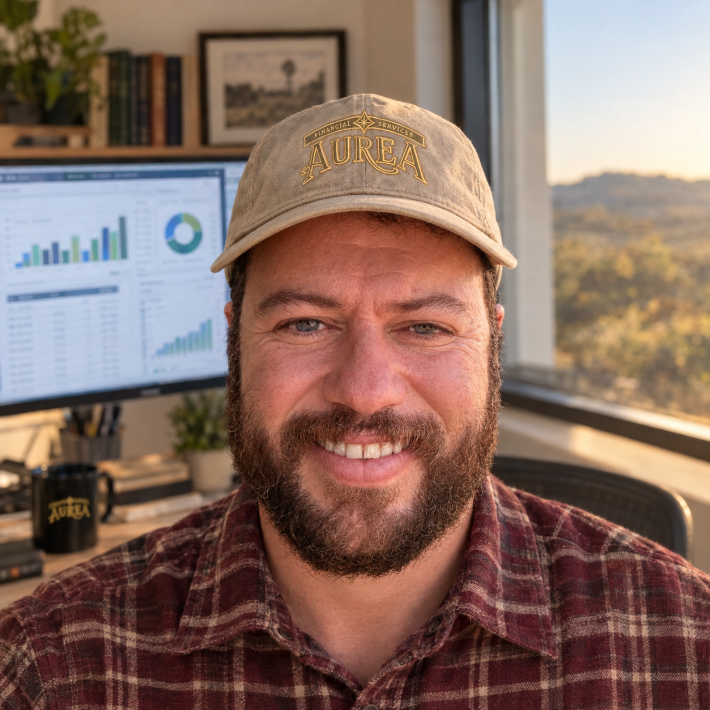

Time
Quem cuida das finanças da sua empresa.

Thiago Morais
Fundador e bookkeeper
Thiago é brasileiro, mora no Texas e fundou a Aurea Financial para levar às pequenas empresas o mesmo cuidado com os números que aplicava como controller financeiro em empresas de construção e indústria.
Antes da Aurea, foi controller financeiro na ACC Construction e na Via Têxtil, onde também cuidava do hedge cambial. Foi sócio da corretora Futura Invest, atuando com ações e opções, e trabalhou na temporada de impostos na H&R Block.
É MBA em Gestão Financeira, Auditoria e Controladoria pela FGV e certificado pela Intuit como QuickBooks ProAdvisor.
Thiago is Brazilian, lives in Texas, and founded Aurea Financial to give small businesses the same care with the numbers he brought to his work as a financial controller in construction and manufacturing companies.
Before Aurea, he was a financial controller at ACC Construction and at Via Têxtil, where he also managed foreign exchange hedging. He was a partner at the brokerage firm Futura Invest, working with stocks and options, and worked the tax season at H&R Block.
He holds an MBA in Financial Management, Auditing and Controlling from FGV and is an Intuit-certified QuickBooks ProAdvisor.
Trajetória
- Aurea FinancialFundador e bookkeeper
Bookkeeping em QuickBooks para pequenas empresas nos Estados Unidos, com relatórios mensais em português e inglês.
- H&R BlockPreparador de impostos (temporada)
Preparação de declarações de imposto durante a temporada de impostos nos EUA.
- ACC ConstructionController financeiro
Controladoria e gestão financeira de uma empresa de construção.
- Via TêxtilController financeiro
Controladoria, pagamentos internacionais e hedge cambial em uma empresa do setor têxtil.
- Futura InvestSócio e broker
Mercado de ações e operações com opções.
- FGVMBA em Gestão Financeira, Auditoria e Controladoria
Fundação Getulio Vargas, Brasil.
Certificações
Vamos conversar sobre a sua empresa?
Agende uma ligação gratuita